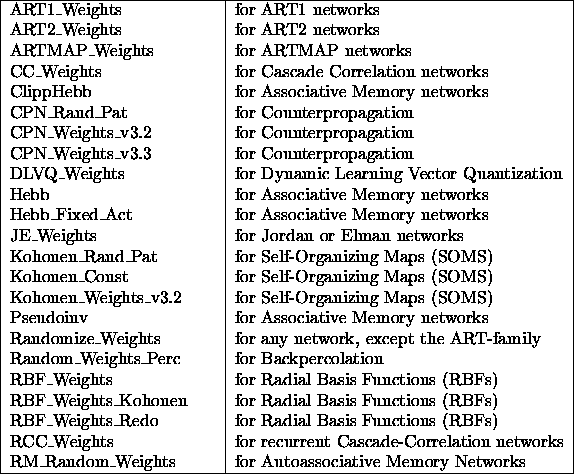

In order to work with various neural network models and learning algorithms, different initialization functions that initialize the components of a net are required. Backpropagation, for example, will not work properly if all weights are initialized to the same value.
To select an initialization function, one must click in the INIT line of the control panel.
The following initialization functions are available:

All these functions receive their input from the five init parameter fields
in the control panel. See figure 
Here is a short description of the different initialization functions: